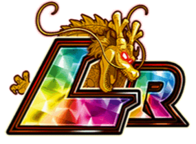
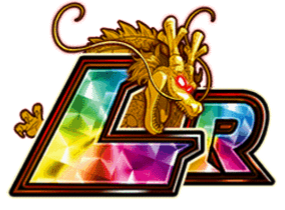

(Carnival)

Build recomendada
DATA DE LANÇAMENTO: 26/07/2024

(Carnival)
Build recomendada
O Gamma 1 vira um tank suporte, já que enquanto teu HP estiver acima de 30% ele tem 30% de redução de dano, 300% de ATK e DEF e ganha +20% de chance de crítico e +10% de redução de dano por orb INT ou STR pega, podendo chegar até 80% de redução de dano
Já que o Gamma 2 não está mais presente, ele muda orbs AGL pra INT pra compensar e facilitar a pegar mais redução de dano br
E como se não bastasse isso, o Ultra SA dele dá 50% de DEF pra todo mundo por 2 turnos, sendo completamente ridículo de desbalanceado
Vale lembrar que ele mantém os 50% de suporte que já tinha, então ele realmente é muito absurdo
Nota dos Links:
07/10
Nota das Categorias:
09/10

Pré-Standby
Gamma 1 & Gamma 2
Standby
Gamma 1 & Gamma 2
Você chegou ao fim dessa página!
Obrigado por ler tudo, e fica a vontade pra ver outras